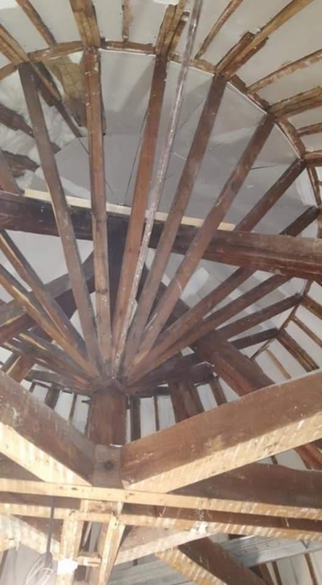

Restauration d'un dôme près de la Rotonde de Vichy
Un chantier de plâtrerie traditionnelle dans une bâtisse ancienne, pour restaurer un plafond courbe et sa charpente rayonnante sans perdre le cachet d'origine.

Le projet
Cette bâtisse ancienne, située près de la Rotonde de Vichy, possède une pièce coiffée d'un dôme, porté par une charpente en bois rayonnante. Le plafond courbe d'origine était à reprendre, et les propriétaires tenaient à conserver le caractère de la pièce.
Ce que nous avons fait
La charpente a d'abord été mise à nu et contrôlée. Nous avons ensuite reconstitué le plafond en suivant la courbure de la structure, avec des techniques de plâtrerie traditionnelle adaptées aux bâtiments anciens. Chaque surface a été reprise avec une attention particulière aux raccords et à la régularité de la courbe.
Le résultat
La pièce retrouve un plafond sain et régulier, qui épouse la forme du dôme. Le cachet de la maison est préservé, avec le confort et la solidité d'une rénovation actuelle.
Photos du chantier
Cliquez sur une photo pour l'agrandir.


Un projet de rénovation ? Parlons-en.
Nous venons voir les lieux gratuitement et vous remettons un devis détaillé sous 72 heures.